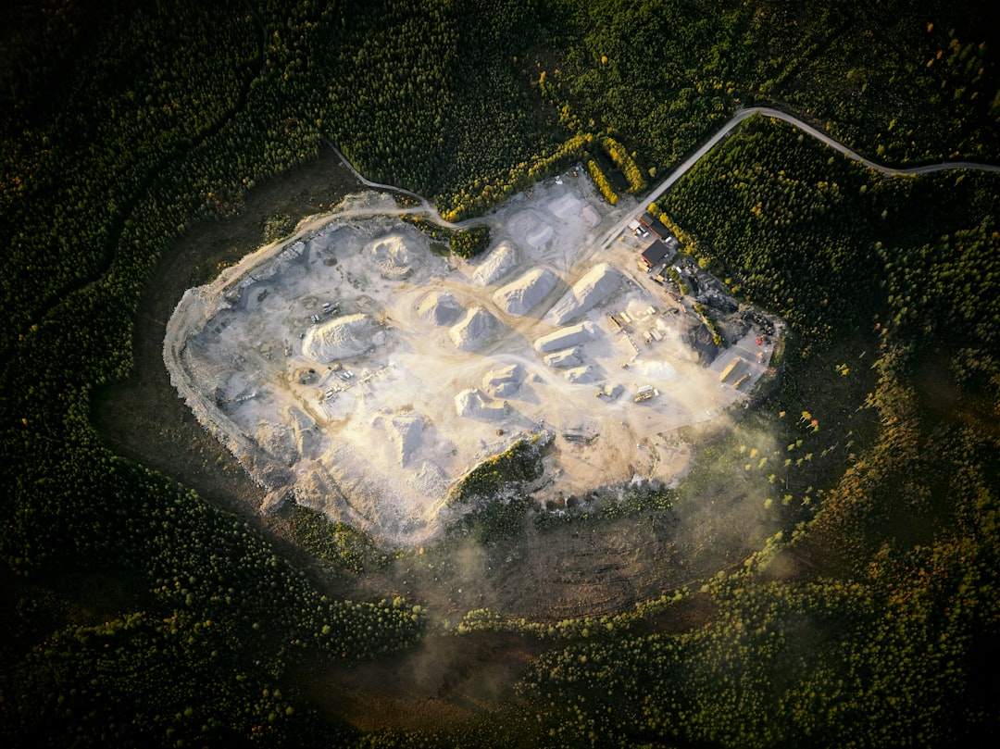

미중 규제 충돌, 韓 이트륨·이리듐 조달 '회색지대' 넓어진다

미국은 2023~2024년 연속으로 대중 반도체 장비 수출통제를 강화(Entity List 추가, EAR 99→CCL 전환)했고, 중국은 이에 대한 대응으로 갈륨·게르마늄(2023.8), 흑연(2023.12), 안티몬(2024.9) 수출통제를 단계적으로 확대해왔다. 이 패턴은 '미국 조치→6~12개월 내 중국 보복' 주기로 반복되고 있다.
이트륨은 OLED 발광층 소재 및 YAG 레이저(반도체 스크라이빙용)의 핵심 원료로, 중국산 비중이 약 90%다. 이리듐은 MOCVD 도가니 및 PEM 수전해 촉매로 사용되며 공급의 약 85%가 남아프리카·러시아에 집중되어 있으나 정제 가공은 중국이 60% 이상을 담당한다.
미중 기술패권 충돌 속에서 한국 기업들은 미국 CHIPS Act 수혜를 위해 '중국산 소재 비중 축소' 조건을 충족해야 하는 동시에, 실제 조달에서는 중국산을 즉각 대체할 소싱 경로가 없는 모순에 처해 있다. 이른바 '컴플라이언스 갭(compliance gap)'이다.
미중 규제 충돌의 핵심은 한국 기업들이 어느 쪽 규정을 먼저 맞춰야 하는지 불명확하다는 점이다. 미국 규정을 따르면 중국 소재를 줄여야 하고, 그러면 당장 공정 원가가 오른다. 반대로 중국 소재를 계속 쓰면 미국 보조금·수출허가 리스크가 생긴다. 이 '회색지대'에서 단기 이익을 취하는 트레이더들이 이미 중개 마진을 키우고 있다.
이트륨의 경우, 에스토니아 Silmet(현 NEO Performance Materials), 일본 신에쓰화학 등 비중국산 공급사들이 존재하지만 가격이 중국산 대비 40~60% 비싸고 납기도 3~4개월 길다. 구매담당자가 단기 원가 절감 압박을 받는 구조에서는 규정 준수보다 단가 선택이 우선되는 현실이 바뀌지 않는다.
일본 신에쓰화학·TDK, 에스토니아 NEO Performance Materials 등 비중국산 희토류 정제사들은 미중 규제 충돌 국면에서 안정적인 프리미엄 수요처를 확보하게 된다. 이들은 이미 2024년 하반기부터 한국 수요처와의 중장기 계약 비중을 높이고 있다.
국내에서는 희토류 재활용 기업(예: 성일하이텍)이 OLED 폐패널·스크랩에서 이트륨을 회수하는 도시광산 방식으로 반사 수혜를 받는다. 성일하이텍의 희토류 회수 가공 매출은 2023년 약 480억 원에서 2025년 700억 원 이상으로 확대될 전망이다.
중소형 OLED 부품·소재사들이 가장 취약하다. 대형 고객사(삼성·LG)는 자체 소싱팀이 있지만, 2차 협력사 레벨에서는 이트륨 가격 인상분을 납품 단가에 반영할 협상력이 없다. 원가 압박이 수익성 훼손으로 직결된다.
중국산 소재 의존도가 높은 한국 MOCVD 장비·부품 업체들도 이리듐 도가니 조달 차질 시 납기 지연 리스크를 고객사에 전가받는다. GaN 파워반도체 수요 확대로 MOCVD 가동률이 높아지는 시기에 이리듐 병목은 직접적 생산 차질로 이어진다.
컴플라이언스 갭을 선제적으로 관리하려면 지금 당장 공급망 내 중국산 소재 비중 실사(tier 2~3까지)를 시행해야 한다. 미국 CHIPS Act 보조금 신청 기업들은 2025년 내 공급망 투명성 보고서 제출이 의무화될 가능성이 높다.
이트륨 대체 조달은 일본·에스토니아 공급사와 소량이라도 시험 구매(trial order)를 먼저 해야 한다. 단가 차이를 이유로 미루다가 규제가 실제 발동되면 그때는 물량 자체를 확보할 수 없다. 선행 관계 형성이 조달 우선권을 결정한다.
실제 조달 현장에서는 — 미중 규제 충돌 국면에서 중국 공급사들이 '제3국 경유 우회 송장(transit invoice)' 발행을 제안하는 사례가 늘고 있다. 이는 단기적으로 규정 위반 소지가 있으며, 미국 BIS 조사 시 한국 기업도 연루될 수 있다. 구매 계약서에 원산지 보증 조항을 명시하고 공급사 실사를 강화해야 한다.
이 포스팅은 쿠팡 파트너스 활동의 일환으로 수수료를 제공받습니다.